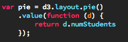
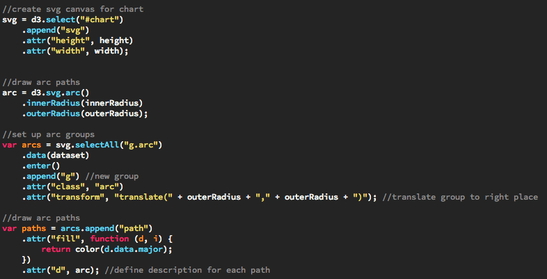
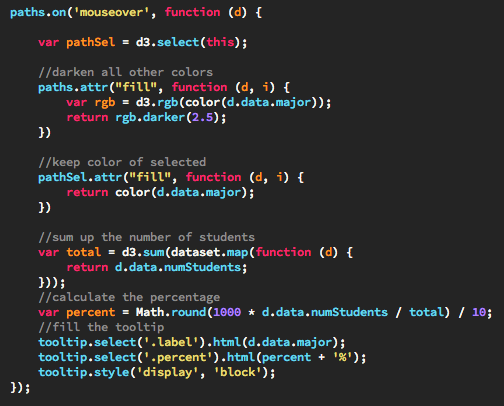

This chart shows the enrollment in each major in the College of Engineering at Iowa State. The source for our data is the same report we used in our stack chart. The enrollement report can be found here. Hover over each portion on the ring chart to see that major's percentage of the total enrollment.
D3 layouts take your dataset and generate a new dataset that is suited to a specific type of visual layout. Some common layouts in D3 are:
Simply defining a pie() layout is not enough to make data into a pie chart, you also have to build the graphics using the data. In our example we transformed our CSV data using the pie() layout, then created arc-paths using that data.
To draw our chart, we use SVG paths again. This time however, D3 makes it easy to define paths in the form of arcs. We define the inner and outer radius for the arc() method. We then divide our dataset into arc groups. Inside each group we create a path defined by our arc. These arcs are also formatted to be filled with a color.
A stand-out feature of D3 is the ability to add interactivity to your graphs and charts. To illustrate the effectiveness of this, we added tooltips to our ring chart to show the percentage each major makes up of the whole. Adding listeners for interactivity in D3 is fairly similar to how jQuery does it. We define a function to be called upon the “mouseover” event. In that function we fill the tooltip with the proper data, and recolor the elements of the chart to draw focus the selected element. Note that we also have listeners for the “mousemove” and “mouseout” events. Please see the full source code.
